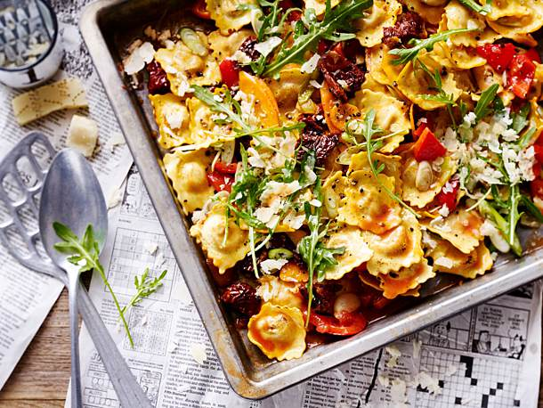

Kochlessia
vegetarische Speisen
Ravioli vom Blech

Du brauchst
- 3 Möhren
- 2 rote Paprikaschoten
- 2 Knoblauchzehen
- 50 g getrocknete Softtomaten
- 3 Pck. (à 250 g) Ravioli (z. B. mit Tomate-Mozzarella-Füllung)
- 4 EL Öl (z. B. „Basilico“ von Mazola)
- 200 ml Tomatensaft
- 1 TL Gemüsebrühe (instant)
- Salz, Pfeffer
- 2 EL Balsamico-Essig
- 75 g Rucola
- 4 Lauchzwiebeln
- 50 g Parmesan (Stück)
Zubereitung
- Backofen vorheizen (E-Herd: 200 °C/Umluft: 180 °C/Gas: s. Hersteller). Möhren schälen, waschen
und in dünne Scheiben schneiden. Paprika putzen, waschen und in grobe Stücke schneiden. Knoblauch
schälen und in dünne Scheiben schneiden. Softtomaten grob in Stücke schneiden.
- Vorbereitetes Gemüse, Softtomaten, Knoblauch, Ravioli und Öl auf einem Backblech mischen, gleichmäßig
verteilen. Im heißen Backofen 18–20 Minuten backen.
- 1⁄4 l Wasser und Tomatensaft aufkochen, Brühe einrühren. Mit Salz, Pfeffer und Essig würzen. Nach
ca. 5 Minuten Tomatenbrühe über die Nudeln verteilen. Ravioli zu Ende garen, dabei zwischendurch noch
ein- bis zweimal durchrühren.
- Rucola waschen und trocken schütteln. Lauchzwiebeln waschen, putzen und in Ringe schneiden. Parmesan
grob raspeln und alles zusammen über die fertigen Ravioli streuen.
Frittata mit Spinat und Erbsen
Du brauchst
- 200 g TK-Erbsen
- Salz, Muskat, Pfeffer
- 50 g junger Blattspinat
- 1 Bund Lauchzwiebeln
- 8 Eier (Gr. M)
- 150 g Babysalatmix
- 1 Bund Radieschen
- 5 EL Öl
- 200 g Doppelrahmfrischkäse
- 3 EL heller Balsamico-Essig
- 1 TL flüssiger Honig
Zubereitung
-
Für die Frittata Erbsen in kochendem Salzwasser 1–2 Minuten blanchieren. Abgießen, kalt abschrecken
und abtropfen lassen. Spinat verlesen, waschen und trocken schütteln. Lauchzwiebeln putzen, waschen
und in breite Stücke schneiden. Eier verquirlen und mit Salz und Muskat würzen.
- Für den Salat Salatmix verlesen, waschen und trocken schütteln. Radieschen putzen, waschen und in
grobe Stifte schneiden.
- 2 EL Öl in einer ofenfesten Pfanne erhitzen. Lauchzwiebeln darin andünsten. Erbsen, Spinat und Eier
zugeben und verrühren. Frischkäse in Klecksen in die Eiermasse verteilen. Zugedeckt bei schwacher
Hitze ca. 10 Minuten stocken lassen. Dann unter dem Backofengrill ca. 3 Minuten goldbraun übergrillen.
- Inzwischen für die Vinaigrette Essig, Salz, Pfeffer und Honig verquirlen. 3 EL Öl darunterschlagen.
Salat und Radieschen mit der Vinaigrette mischen. Zur Frittata reichen.
Spinat-Shakshuka mit Spätzle

Du brauchst
- 1 Zwiebel
- 1 Knoblauchzehe
- 2 große Strauchtomaten
- 1 EL Öl
- 400 g frische Spätzle (Kühlregal)
- 200 g junger Spinat
- Salz, Pfeffer, Muskat
- 5 EL Gemüsebrühe
- 5 EL trockener Weißwein
- 2 Eier (Gr. M)
- 80 g Emmentaler (geraspelt)
- 2 EL Röstzwiebeln
Zubereitung
-
Zwiebel und Knoblauch schälen, beides fein würfeln. Tomaten waschen, jeweils einen Deckel abschneiden
und mit einem Esslöffel aushöhlen. Deckel und ausgehöhltes Fruchtfleisch klein schneiden.
- Öl in einer großen Pfanne erhitzen. Spätzle darin unter Wenden anbraten. Zwiebel und Knoblauch
kurz mitbraten. Spinat, bis auf einige Blätter zum Bestreuen, und Tomatenstückchen unterrühren.
Zugedeckt ca. 2 Minuten garen. Mit Salz, Pfeffer und Muskat würzen.
- Brühe und Wein in die Pfanne geben. Ausgehöhlte Tomaten mit der Öffnung nach oben in die
Spinatspätzle setzen. Eier nacheinander vorsichtig aufschlagen und in die Tomaten gleiten lassen.
- Spätzlepfanne mit Käse bestreuen und zugedeckt ca. 7 Minuten garen, bis die Eier gestockt sind.
Rest Spinat und Röstzwiebeln darüberstreuen.